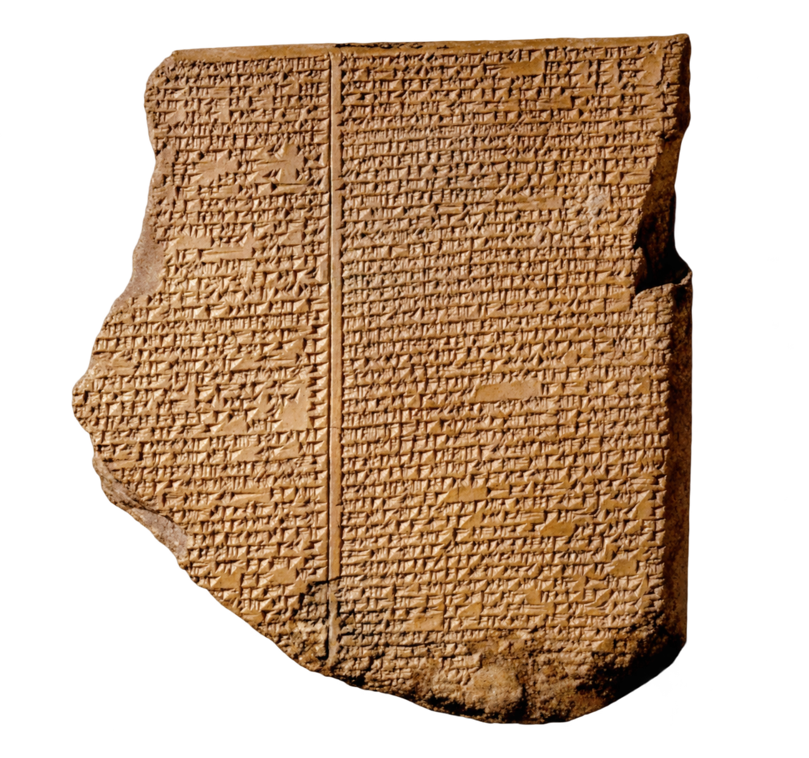
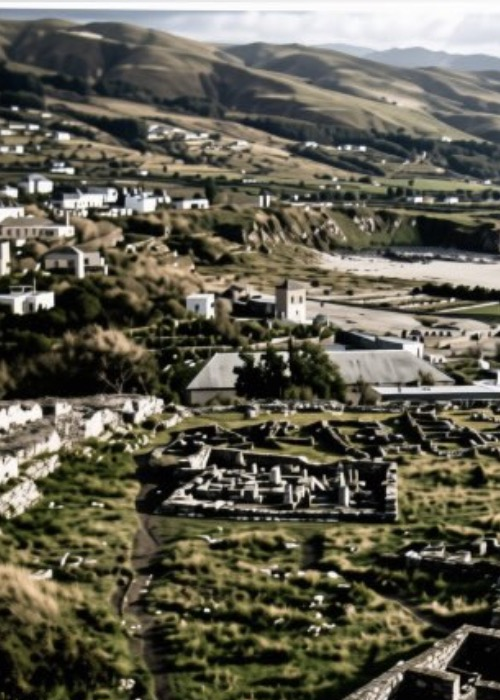

Récit en images
Avant la Phénicie, il y avait déjà le Liban.
Récit en images
Avant la Phénicie.
1 / 5


Carte 1 sur 5
Légende de la publication
Lorsqu’on évoque le Liban, le Phénicie vient immédiatement à l’esprit. Pourtant, la Phénicie n’est pas le commencement du Liban, elle en est l’un des chapitres !
Fig 1. Tablette V de l’Épopée de Gilgamesh qui relate l’expédition vers la forêt des Cèdres du Liban. Fig 2. Vue Sud du château de Byblos avec le temple en forme de L au premier plan, 1959. Photographie de Padres Hana, remise en couleur. Fig 3. Vue de la mer de la station enneigée des Cèdres.
À lire ensuite
D’autres récits à explorer.
1 / 2